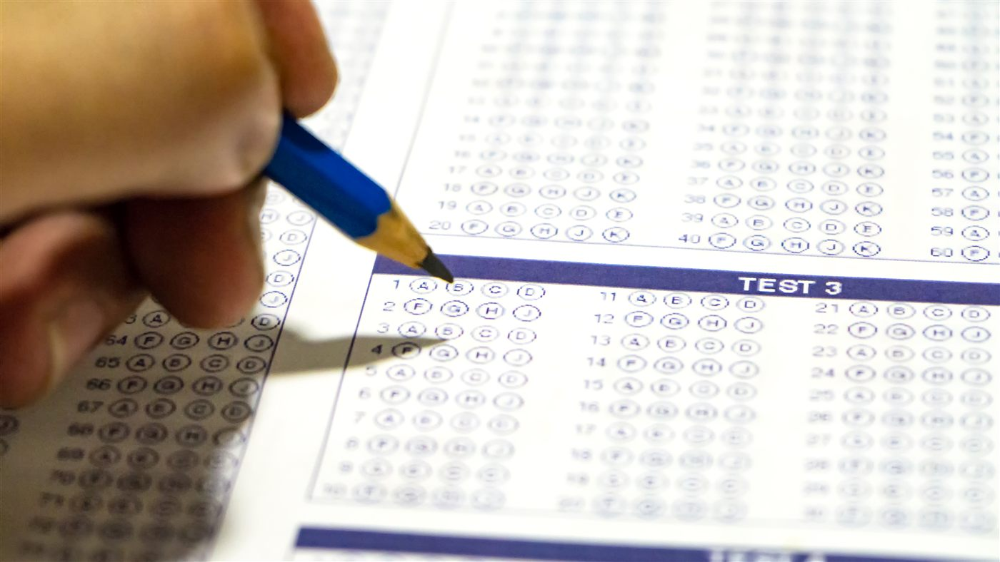

코로나 시기에 미국 대학 대부분이 SAT를 선택 사항으로 돌렸고, 한동안 '이제 SAT는 안 봐도 된다'가 통설이 됐습니다. 그 통설이 지금 위에서부터 깨지고 있습니다. 2026-27학년도 입시부터 열 곳이 SAT·ACT 제출을 다시 의무화했고, 두 곳이 그다음 해에 합류합니다. 명단이 전부 최상위권이라는 게 요점입니다.

누가, 언제부터
2026-27학년도부터는 하버드·예일·MIT·칼텍·스탠퍼드·브라운·코넬·다트머스·펜실베이니아·조지타운, 2027-28학년도부터는 프린스턴·컬럼비아입니다. MIT는 신입뿐 아니라 편입 지원자에게도 요구하고, 얼리 지원은 11월 30일까지, 레귤러는 12월 31일까지 치른 시험만 인정합니다. 이 학교들을 노린다면 지원하는 해 가을이 사실상 마지노선입니다.
그 아래는 아직 선택제입니다
중위권 주립대 대부분은 선택제를 유지하고 있고, 이 사이트가 다루는 패스웨이 제휴교 29곳과 커뮤니티칼리지는 SAT를 아예 요구하지 않습니다. 그러니 질문을 바꿔야 합니다. 'SAT를 봐야 하나요?'가 아니라 '내가 노리는 층에 SAT가 필요한가요?'입니다.
SAT 없이 상위권을 노린다면
길은 두 갈래입니다. 패스웨이는 SAT 없이 IELTS 5.5 안팎으로 시작해 1학년을 대체합니다. 커뮤니티칼리지 편입은 2년 뒤 컬리지 GPA와 이수 과목으로 심사받습니다. UCLA 편입생의 93%가 캘리포니아 커뮤니티칼리지 출신이고, UC 여섯 캠퍼스는 약정 성적을 채우면 자리를 보장합니다(TAG). 고등학교 성적표는 다시 쓸 수 없지만 컬리지 GPA는 지금부터 만들 수 있다는 것, 그게 이 경로의 본질입니다.
정리하면 이렇습니다. 최상위 12곳이 목표라면 SAT는 다시 필수이고, 준비를 지원 전 해에 끝내야 합니다. 그 층이 아니라면, SAT에 쓸 시간을 영어 점수와 내신에 쓰는 쪽이 대개 남는 장사입니다.